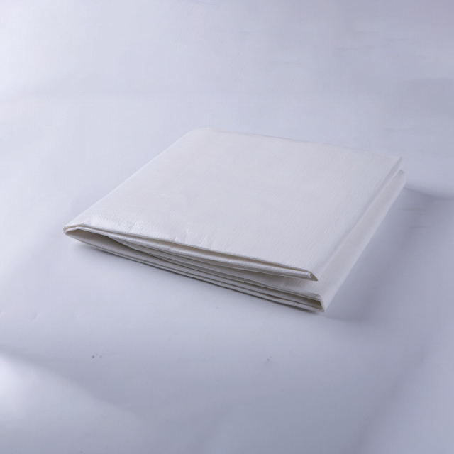

The Hidden Cost of Manual Patient Handling
Every day, nurses and care assistants around the world perform dozens of manual patient transfers — moving patients from bed to stretcher, repositioning immobile patients for wound care, turning patients for hygiene procedures, and shifting patients up or down in bed. Each of these movements carries risk. Not just to the patient, whose fragile skin can suffer tears and shear injuries from rough handling, but to the caregiver, whose body absorbs the cumulative toll of lifting, pulling, and twisting.
Work-related musculoskeletal disorders among healthcare workers are a global occupational health crisis. Nursing and personal care roles consistently rank among the highest for back injuries, shoulder strain, and repetitive-motion damage. The financial cost — measured in workers' compensation claims, staff absenteeism, and turnover — runs into billions annually for healthcare systems worldwide. And beyond the financial impact, there is the human cost: experienced nurses forced into early retirement because their bodies can no longer withstand the physical demands of the job.
Patient transfer slide sheets are one of the simplest, most effective tools for addressing this problem. They reduce the physical effort required to move a patient by up to 80 percent compared to manual lifting, dramatically lowering the risk of caregiver injury while simultaneously protecting patients from skin damage during transfers. For healthcare facilities looking to improve staff safety and patient comfort simultaneously, slide sheets are an essential investment.
What Are Patient Transfer Slide Sheets?
A patient transfer slide sheet — also called a repositioning sheet, glide sheet, or sliding sheet — is a low-friction textile or film designed to be placed beneath a patient so that the patient can be moved across a surface with minimal effort. The sheet creates a slippery interface between the patient and the bed or stretcher surface, allowing one or two caregivers to perform transfers that would otherwise require three or four people, or mechanical lifting equipment.
Slide sheets come in various formats: single sheets, paired sheet systems (where two sheets slide against each other), hybrid designs that combine a slide surface with a pull handle or loop, and disposable single-use variants for infection control-sensitive environments. The format you choose depends on your clinical setting, transfer frequency, and infection control protocols.
Common Materials and Their Characteristics
The material of a slide sheet directly determines its performance — how much friction reduction it provides, how comfortable it feels against the patient's skin, whether it can be laundered and reused, and what it costs per use. Here are the primary materials used in patient transfer slide sheets:
Woven Nylon / Low-Friction Fabric
Woven nylon slide sheets are the most widely used reusable option. The tightly woven synthetic fabric provides a smooth, low-friction surface that allows patients to glide across bed surfaces with significantly reduced force. Nylon sheets are durable, can be laundered hundreds of times, and are relatively comfortable against patient skin. They are the preferred choice for general ward use where transfer frequency is moderate and infection control requirements allow for reprocessing.
- Friction reduction: Excellent — typically reduces required transfer force by 70-80 percent.
- Durability: High — withstands hundreds of wash cycles.
- Patient comfort: Good — smooth but breathable surface.
- Best for: General ward transfers, rehabilitation departments, and settings with moderate transfer volume.
- Cost per use: Low when amortised over many wash cycles.
Nonwoven Synthetic (SMS / Spunlace)
Nonwoven synthetic slide sheets are designed for single-use or limited-use applications. Made from spunlace or SMS (spunbond-meltblown-spunbond) nonwoven materials, these sheets offer good slip properties while being lightweight and disposable. They are particularly valuable in isolation wards, operating theatres, and emergency departments where cross-contamination risk must be minimised.
- Friction reduction: Good — typically reduces required transfer force by 50-70 percent.
- Durability: Single-use or limited reuse.
- Infection control: Excellent — disposable design eliminates cross-contamination risk between patients.
- Best for: Isolation rooms, operating theatres, emergency departments, and high-turnover settings.
- Cost per use: Higher per unit but eliminates laundering costs and infection risk.
Satin or Satin-Like Fabric
Satin weave fabrics provide an exceptionally smooth surface with very low friction. They are sometimes used in paired sheet systems where one sheet stays under the patient and a second sheet slides beneath it. The satin-on-satin interface offers near-frictionless movement, enabling very small care teams to perform heavy-patient transfers safely.
- Friction reduction: Very high — among the lowest-friction reusable options available.
- Patient comfort: Excellent — soft, smooth feel.
- Durability: Moderate — satin weaves may be more prone to snagging than plain-weave nylon.
- Best for: Paired-sheet transfer systems, bariatric patient handling, and situations requiring maximum friction reduction.
Polyethylene Film
Polyethylene (PE) film slide sheets are the most economical option. They provide adequate friction reduction for light to moderate transfer tasks and are fully disposable. While not as comfortable as fabric-based sheets, PE film is useful for short-duration transfers, transport between departments, and situations where a quick, low-cost transfer solution is needed.
- Friction reduction: Adequate — reduces transfer force by 40-60 percent.
- Cost: Lowest — ideal for budget-conscious single-use applications.
- Limitations: Less breathable than fabric options; may feel less comfortable for extended patient contact. Not suitable as a long-term patient support surface.
- Best for: Short-duration transfers, inter-departmental patient transport, and budget-conscious disposable use.
Key Transfer Scenarios and Sheet Selection
Different clinical scenarios demand different slide sheet approaches. Understanding when to use which type is essential for both safety and cost-effectiveness.
Bed-to-Stretcher Transfers
This is one of the most physically demanding manual handling tasks in a hospital. The patient must be moved laterally from one surface to another, often at slightly different heights, and frequently with tubes, lines, and monitoring equipment attached. A paired sheet system — one sheet under the patient and one on the target surface — provides the smoothest transfer with minimal lateral force. For high-frequency departments like emergency and theatre, disposable nonwoven sheets are preferred for infection control.
In-Bed Repositioning
Regular repositioning is essential for pressure ulcer prevention. Immobile patients need to be turned or shifted at least every two hours. A single reusable slide sheet placed beneath the patient allows one caregiver to reposition a patient who would otherwise require two or three staff members. Over a 24-hour period, this saves enormous cumulative physical effort.
Turning for Wound Care and Hygiene
When providing wound care, changing dressings, or performing hygiene procedures, patients often need to be turned to access different body areas. A slide sheet makes this process smoother, reducing the pulling and dragging that can cause skin shear injuries, particularly in elderly or fragile patients.
Operating Theatre and Procedural Transfers
Patients are transferred onto and off operating tables multiple times per surgical procedure. Each transfer is an opportunity for patient injury (nerve compression, skin shear, line disconnection) and caregiver strain. Low-friction slide sheets designed for theatre use should be single-use, wide enough to accommodate the full patient body, and compatible with sterile draping protocols.
Skin Shear Prevention: Why It Matters
When a patient is dragged across a bed surface, the skin adheres to the fabric while deeper tissues move with the skeleton — creating a shearing force that can tear blood vessels, damage tissue, and initiate pressure ulcer formation. This is particularly dangerous for elderly patients, those with compromised circulation, and patients with existing pressure injuries. Even a single rough transfer can cause measurable skin damage.
Slide sheets address this by eliminating the drag friction between the patient and the bed surface. The patient glides rather than slides on their skin, dramatically reducing shear forces. Studies have shown that proper use of slide sheets can reduce lateral friction force by 60-80 percent, which translates directly into lower skin shear risk and fewer pressure injuries.
Safe Workload and Staffing Implications
From a management perspective, the staffing impact of slide sheets is significant. Without slide sheets, a safe lateral transfer of an average adult patient typically requires three to four caregivers. With a slide sheet, the same transfer can be performed safely by one or two people. This has direct implications for:
- Shift staffing: Fewer staff needed per transfer, freeing nurses for other clinical tasks.
- After-hours care: Night shifts with reduced staffing can still perform transfers safely.
- Home care: Single caregivers in home settings can manage patient transfers that would otherwise be impossible without equipment or assistance.
- Injury-related absenteeism: Reduced back and shoulder injuries mean fewer staff on medical leave and lower workers' compensation costs.
Training and Best Practices
A slide sheet is only as effective as the technique used with it. Healthcare facilities should ensure that all staff involved in patient handling receive training on proper slide sheet use. Key best practices include:
- Position the sheet correctly: The slide sheet should extend from the patient's shoulders to below the knees for full-body transfers. Partial sheets can be used for repositioning specific body segments.
- Communicate with the team: When two or more caregivers are involved, coordinate the pull on a counted signal to ensure even force application.
- Avoid jerking: Apply smooth, steady force. Jerking can cause the sheet to bunch, reducing its effectiveness and potentially injuring the patient.
- Check for obstructions: Before transferring, ensure there are no tubes, lines, or bed rail components in the transfer path.
- Remove the sheet after transfer: Do not leave slide sheets under patients as a substitute for bed linen unless the sheet is specifically designed for prolonged contact. Prolonged contact with some low-friction materials can cause moisture buildup and skin maceration.
- Dispose or launder appropriately: Single-use sheets should be discarded after each patient use. Reusable sheets should be laundered per the manufacturer's instructions to maintain their low-friction properties.
Regulatory and Standards Context
Safe patient handling is increasingly regulated. Many jurisdictions have enacted legislation or guidelines requiring healthcare facilities to implement safe patient handling programmes, which include the provision and use of mechanical aids such as slide sheets. Key regulatory frameworks include:
- OSHA guidelines (United States): The Occupational Safety and Health Administration provides guidelines for safe patient handling, recommending the use of assistive devices including slide sheets to reduce musculoskeletal injury risk.
- HSE guidance (United Kingdom): The Health and Safety Executive's Manual Handling Operations Regulations require employers to avoid hazardous manual handling where reasonably practicable and to assess and reduce risk where it cannot be avoided.
- Safe Work Australia: Provides codes of practice for manual tasks in healthcare, emphasising the use of mechanical aids and patient handling equipment.
- ISO standards: ISO 13485 quality management standards apply to medical device manufacturers producing slide sheets classified as medical devices in certain jurisdictions.
Procurement Best Practices for Hospitals and Distributors
1. Match Sheet Type to Clinical Need
Not every department needs the same slide sheet. General wards benefit from durable reusable nylon sheets. Isolation wards and theatres need disposable nonwoven options. Emergency departments may benefit from having both types available. Procure by use case rather than standardising on a single product across the entire facility.
2. Consider Total Cost of Use
Reusable sheets have a higher upfront cost but a lower per-use cost when laundered repeatedly. Disposable sheets have a lower per-unit cost but accumulate ongoing expense. Calculate the break-even point based on your transfer volume and available laundering capacity. For high-volume departments, a mixed approach — reusable for routine transfers, disposable for isolation cases — often delivers the best balance.
3. Verify Material Quality
Request fabric weight specifications, friction coefficient data, and durability testing results from suppliers. A slide sheet that loses its low-friction properties after twenty washes is not cost-effective, regardless of its initial price. Newrise Medical provides detailed material specifications and quality testing documentation for all patient transfer products.
4. Ensure Appropriate Sizing
Slide sheets should be wide enough to accommodate the full range of patient body sizes in your facility, including bariatric patients. Standard sizes typically range from 60 cm to 90 cm in width and 120 cm to 200 cm in length. For bariatric care, extra-wide options (90 cm+) are essential.
5. Plan for Training
Budget for initial and refresher training sessions. Even the best slide sheet will not prevent injuries if used incorrectly. Factor training time into your implementation plan, and ensure that new staff receive slide sheet training as part of their induction process.
Why Choose Newrise Medical for Patient Transfer Products
Changzhou Newrise Medical & Hygiene Products Co., Ltd. has been a professional manufacturer of disposable medical and healthcare supplies since 2004. Our patient transfer product range includes:
- Patient slide sheets: Low-friction sheets for safe patient repositioning and transfers, available in reusable and disposable formats.
- Patient transfer sheets: Smooth, low-friction transfer sheets designed for bed-to-stretcher and inter-departmental patient moves.
- Quality-certified production: ISO 13485 quality management system with rigorous material testing and documented quality records.
- Material options: Nonwoven synthetic, woven fabric, and PE film variants to suit different clinical requirements and budgets.
- Custom sizing: Standard and custom dimensions available to meet specific departmental needs.
- Competitive pricing: Direct manufacturer pricing with flexible MOQ terms for distributors and healthcare groups.
- Reliable supply: Established production capacity and inventory management to support regular orders and surge demand.
With over 20 years of manufacturing experience in disposable medical supplies, Newrise Medical is a trusted partner for hospitals, nursing homes, and distributors worldwide seeking reliable, quality-certified patient transfer products at competitive prices.
Frequently Asked Questions
How often should reusable slide sheets be replaced?
The lifespan of a reusable slide sheet depends on the material, wash frequency, and usage intensity. Quality woven nylon sheets can typically withstand 200-500 wash cycles before the low-friction surface degrades noticeably. Establish a replacement schedule based on visual inspection and performance testing — if the sheet no longer provides smooth sliding, it is time to replace it.
Can slide sheets be used for bariatric patients?
Yes, but standard-width sheets may not provide adequate coverage. For bariatric patients, use extra-wide slide sheets (90 cm or wider) and ensure that the weight capacity of the sheet exceeds the patient's weight. Some manufacturers offer bariatric-specific slide sheets with reinforced edges and higher weight ratings.
Are slide sheets classified as medical devices?
Classification varies by jurisdiction. In some regions, patient transfer slide sheets are classified as Class I medical devices, while in others they are considered general healthcare aids without formal device classification. Check with your local regulatory authority and ensure your supplier provides appropriate documentation for your market.
What is the minimum order quantity (MOQ)?
MOQ varies by product type, material, size, and whether custom packaging is required. Contact our sales team for current pricing and MOQ details tailored to your specific requirements.
Do you provide OEM / private labelling services?
Yes. Newrise Medical offers full OEM services including custom packaging, branded labelling, and custom sizing. We support both small-batch and large-scale OEM orders.